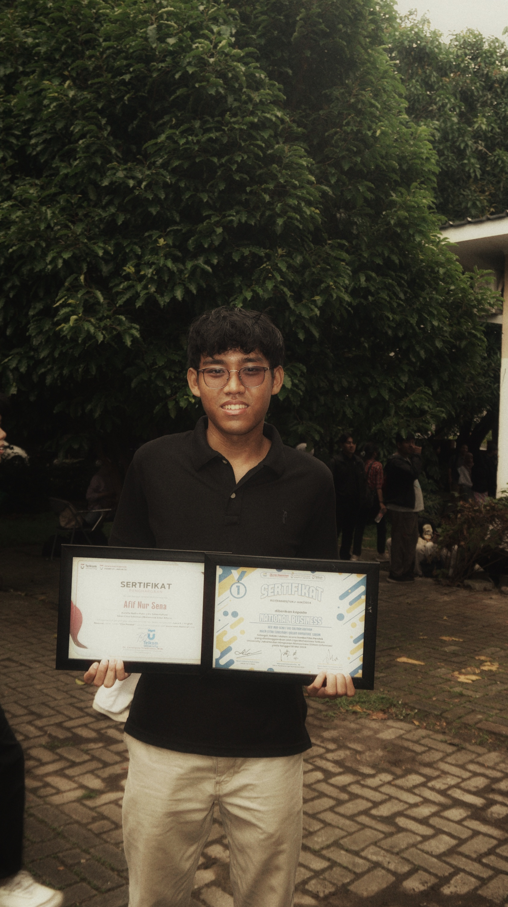

AFIF NUR SENA
MAHASISWA SISTEM INFORMASI
Jakarta, Indonesia | HP: +6281533369512 | Email: afifnursena08@gmail.com
LinkedIn: Afif Nur Sena | Instagram: afifnursena
RINGKASAN
Hubungi SayaMahasiswa Sistem Informasi Telkom University Jakarta dengan minat dalam teknologi, pengembangan perangkat lunak, dan basis data. Memiliki pengalaman dalam pengembangan aplikasi berbasis web dan desktop, serta pemrograman database menggunakan SQL dan Python. Aktif dalam berbagai organisasi dan kompetisi, serta memiliki keterampilan dalam networking, pemrograman, dan manajemen proyek. Berorientasi pada solusi, mampu bekerja dalam tim, serta memiliki komunikasi yang baik dalam menjelaskan konsep teknis secara jelas dan detail.
PENDIDIKAN DAN PENGALAMAN
SMK Negeri 26 Jakarta | Sistem Informatika, Jaringan, dan Aplikasi | 2019 - 2023
- Lulus Sertifikasi:
- CompTIA Network+, 2022.
- LSP KKNI Level II Teknik Komputer dan Jaringan, 2022.
- Peserta Lulus Cybersecurity Training Sub Batch 1/2022 - InfraDigital Foundation.
- Ketua & Programmer Tim "1 SMK Negeri 26 Jakarta" (13 Besar Tingkat Nasional dalam Game Padamin).
Telkom University Jakarta | S1 Sistem Informasi - IPK 3.94 | 2023 - Sekarang
- Anggota Google Developer Groups On Campus Telkom University Jakarta.
- Anggota Divisi Media Kreatif Language Club Telkom University Jakarta (Fotografi & Videografi).
- Ketua Tim "National Business", Juara 1 Liga Mahasiswa Tel-U Jakarta 2024 (Film: Silence Doubts).
- Ketua Tim "National Business", Juara 3 UNASFEST 2024 (Film: Charge The Sun).
- Asisten Praktikum Mata Kuliah Algoritma dan Pemrograman (Predikat "Sangat Baik").
PENGALAMAN KERJA
Network Engineer Intern | PT. Nusantara Compnet Integrator | Mei 2022 - April 2023
- Mendukung pemeliharaan & perbaikan infrastruktur jaringan klien seperti Pertamina EP, PT. Jaklingko Indonesia, dan Kementerian.
- Melakukan komunikasi langsung dengan klien untuk memahami kebutuhan dan menjelaskan solusi implementasi jaringan.
- Bekerja dalam tim segmented untuk mengimplementasikan solusi jaringan dan mencegah miss-communication antar tim.
- Melakukan validasi perangkat pelanggan, memperbarui data di sistem, serta mengelola dan mengarsipkan dokumen penting.
KEAHLIAN
| HARD SKILLS | SOFT SKILLS | |
|---|---|---|
| Database & Backend Development | Python, SQL - Aplikasi toko berbasis console dengan integrasi MySQL. | Teamwork & Leadership - Berkoordinasi dan bekerja efektif dalam tim. |
| Python, SQL, Flask, Bootstrap - Scheduler Telegram Bot. | Communication - Menyampaikan ide dan solusi dengan jelas. | |
| Software Development | Java, JavaFX - Aplikasi toko berbasis GUI. | Problem Solving - Kemampuan memecahkan masalah secara analitis. |
| Game Development | C#, Unity - Game edukasi tentang pemadam kebakaran. | |